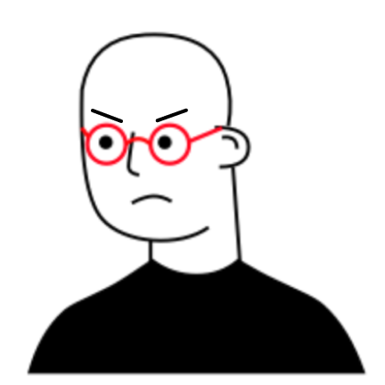
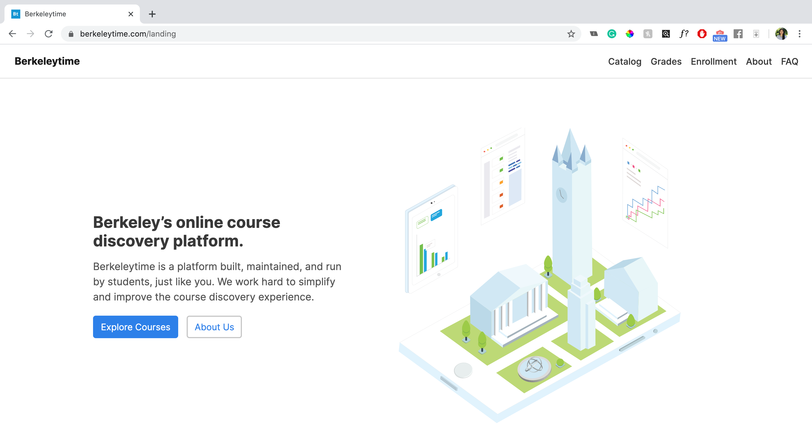

Berkeleytime
I'm a product designer for Berkeleytime, a website used by 26k+ Berkeley students for course exploration that gets 170k+ visitors per year. In this project, I worked with a web engineer and another designer to make the site compatible across all devices.
Problem
Choosing classes at UC Berkeley is a time-consuming and frustrating process. This is due to many factors students face, some of which include frustratingly long waitlists, a lack of grading transparency, and a lot of pressure choosing the right classes to graduate on time.
As a team of student volunteers, our mandate was simple for this project: do whatever we can to simplify the course discovery process.
Research
We started off with a generative research study, interviewing current Berkeley students and learning more about their experiences choosing and enrolling for classes.
"I spent hours finding the right class to take but found out there were no more open seats the moment I tried to enroll. Now I have to find an alternative and do my research all over again."
"Last year I had to create a backup to the backup of my ideal schedule because I knew enrollment would be unpredictable once it started."
"I got waitlisted in all of my classes. I literally had to drop all of them and enroll in random classes just to still be considered a student here."

Goal
My goal in particular was to scale the interaction patterns to non desktop platforms to make Berkeleytime accessible across all devices.
Priority metrics and KPI's: Daily active users and mobile website retention rate compared to that of the desktop site.
Iterations & User Testing
We followed a task based user testing protocol with 10 students and tested workflows for the following three pages:
In our first round of user testing, users were presented with a course catalog that had a side menu for setting filters. Activated filters would then be displayed as pills on the original course catalog screen.

We witnessed participants run into several usability issues with the previous flow, so we explored different mobile patterns that led to the following flow:

Moving forward with the grade distrubutions screen, usability testing allowed us to spot where existing patterns used on the desktop interface failed when they were translated to mobile. This was especially prevalent in data visualizations; users found it difficult to interact with graphs and to interpret screens that were text and statistics heavy.
Below is the evolution of the grade distribution screen as we learned from these observations:

The evolution of the course enrollment screen was similar to that of the grade distributions screen as users faced similar issues.

Final Design
Course Catalog
Filter and sort through all 12,000+ classes offered at Berkeley by requirements, grades, enrollment, and more.

Grade Distributions
View and compare grade distributions for every course.
Grades are retrieved and accurately updated from Berkeley's API.

Enrollment
View and compare grade distributions for every course.
View real time enrollment updates to monitor class opening and waitlist statuses.

I also got the chance to make the graphic for Berkeleytime's landing page. Feel free to take a look at it (and the rest of our snazzy site) here.
Results
Finalized designs have been handed off to the engineering team and construction is currently underway. Berkeleytime will be available to use across all devices for incoming Fall 2020 students!